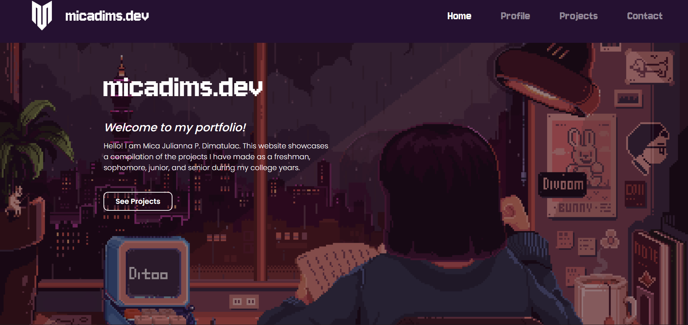
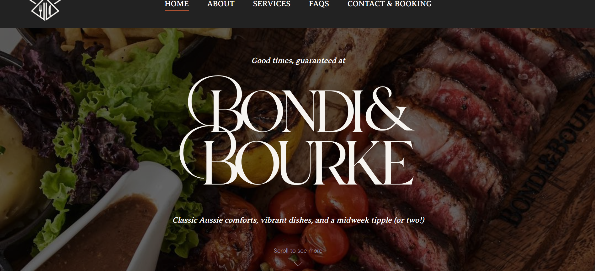
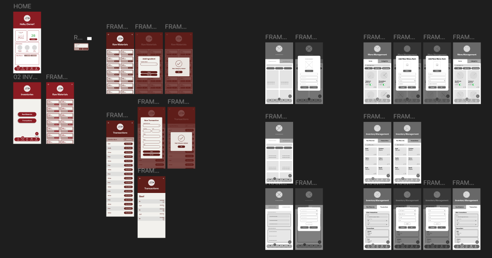
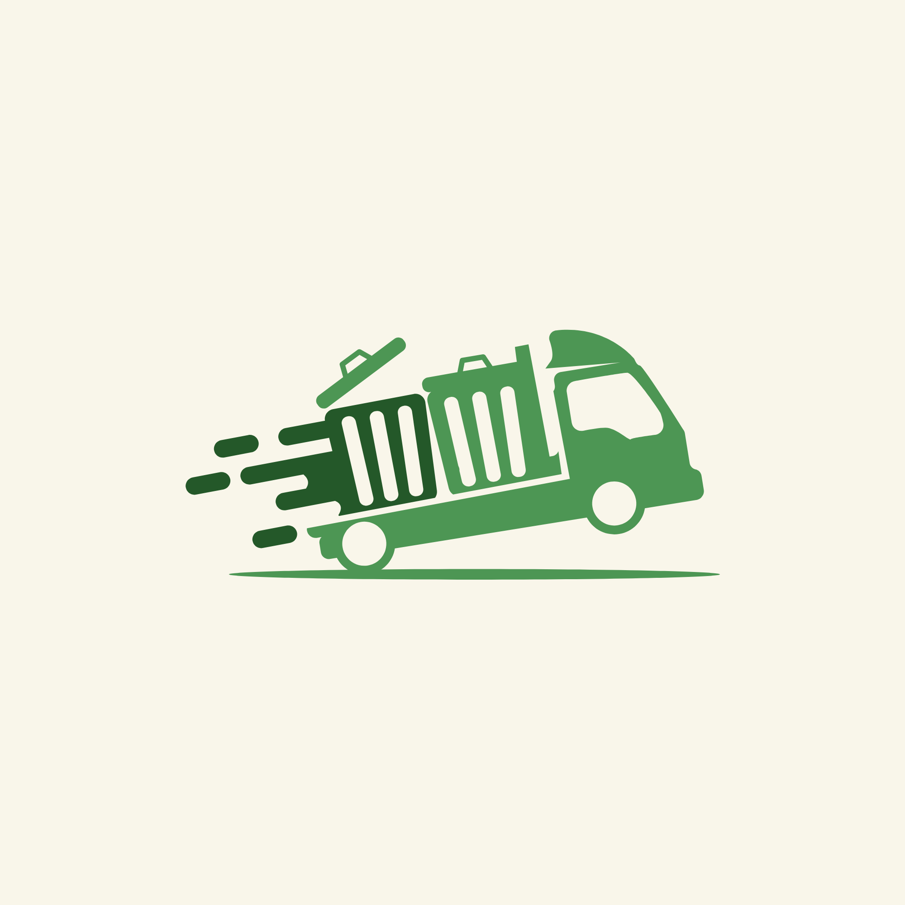

Tech Stack: HTML, CSS, JavaScript, Visual Studio Code, Figma, GitHub
Designed and developed a personal portfolio website to present my profile, projects, and contact details. Responsiveness currently in progress.

Tech Stack: HTML, CSS, JavaScript, Visual Studio Code, Figma, GitHub
Enhanced the front-end interface and UI/UX of an existing restaurant website, improving layout, visual presentation, and user experience. Responsiveness to be implemented.

Tech Stack: Figma
Designed the UI/UX and prepared project documentation for a functional mobile point-of-sale system with front-end, back-end, and database components.
See Figma
Tech Stack: Dart, Flutter, Supabase, Android Studio
An ongoing multi-platform project focused on waste reporting, collection schedule tracking, barangay compliance monitoring, and user-centered mobile UI/UX design.
See ScreensDesign archives containing promotional materials and publication assets for ARC.
Open DriveCreative outputs, pubmats, and graphics made for Echoes-related organization work.
Open DrivePublication materials, event posters, and design works created for Subdominant 7.
Open DriveCreative works, organization visuals, and publication materials prepared for scholars-related initiatives.
Open DriveAcademic design outputs, school pubmats, and related visual materials.
Open Drive